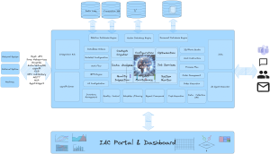

Beyond Stateless AI: The IACF Agent Architecture Redefining Smart Manufacturing
In the rapidly evolving landscape of Industry 4.0, the challenge has shifted from simply deploying Large Language Models (LLMs) to creating systems that possess true institutional memory, architectural resilience, and proactive governance. Traditional AI models are often "stateless"—they process information in the moment but reset once a session ends, lacking the ability to learn from the specific nuances of a factory floor.

Industry AI Core Framework ArchitectureThe IACF AI Agent platform emerges as a sophisticated solution to this exact problem. By decoupling raw reasoning power from specialized knowledge, secure execution, and risk management, IACF transforms standard AI into a persistent, evolving, and highly secure industrial asset.
Here is a deep dive into the four foundational pillars of the IACF architecture and how they are setting a new standard for enterprise AI.
https://youtu.be/M0cjeCjokYU?si=awdDkbZ7msVwb3Ec1. Cognitive Persistence: The Multi-Layer Memory System
To mimic how human experts categorize short-term observations and long-term experiences, the IACF agent utilizes a proprietary Memory Layer architecture managed by advanced Vector Databases. While the underlying LLM serves as the generic reasoning engine, the memory is uniquely owned and managed by the IACF agent itself.
-
Accumulating Self-Knowledge: Every diagnostic task performed, error corrected, and workflow optimized is stored. Over time, the agent "grows" in capability, building a highly specialized historical baseline of your specific manufacturing environment.
-
Cross-Agent Collaboration: IACF allows agents to access a shared pool of experience. If one agent successfully masters a complex supply chain anomaly, that "experience" is indexed and instantly retrievable by other agents in the network facing similar issues.
-
Token Efficiency and Cost Optimization: Processing massive industrial datasets through an LLM is prohibitively expensive and limited by context windows. IACF solves this by using the vector database as a semantic filter. Instead of sending bulk data to the LLM, the system sorts and retrieves only the highly relevant experiential knowledge. This drastically reduces token consumption while maximizing response accuracy.
2. Scalable Security: Distributed Node Architecture
As AI transitions from back-office analytics to edge-based production control, hardware flexibility and data security become paramount. IACF’s Distributed Architecture is engineered for the rigorous demands of industrial IT and OT (Operational Technology) environments.
-
Role-Based Instance Management: The framework allows for the granular deployment of roles across different instances. An agent handling predictive maintenance can run on a completely different instance than one managing quality control, optimizing compute resources where they are needed most.
-
The Agent Node and Isolated Execution: Security is often the greatest barrier to industrial AI adoption. IACF addresses this by running assigned agents on dedicated worker nodes. This containerized approach isolates the agent's execution from the broader system environment, ensuring that if an agent encounters a fault, the integrity of the core infrastructure remains entirely secure.
3. Proactive Governance: The Embedded Skill Vetter
Giving autonomous agents access to specialized "skills"—such as executing API calls, modifying database entries, or adjusting machine parameters—introduces significant operational risk. To counter this, IACF introduces the Embedded Skill Vetter, acting as an automated, real-time compliance officer.
-
Risk Emulation: Before a new skill is installed or executed, the Skill Vetter operates as a digital sandbox. It actively emulates the skill to assess its potential risk profile and systemic impact.
-
Automated Guardrails: If a skill or action is deemed high-risk—threatening data corruption, safety violations, or system instability—the Vetter strictly blocks it from being installed or utilized. This ensures the AI ecosystem remains robust against both human error and unauthorized exploits.
4. Autonomous Evolution: The Experiential Flywheel
In a traditional software paradigm, improvements rely on manual updates and complete model fine-tuning. The IACF architecture, however, is designed to evolve continuously through use.
-
Knowledge Compounding: Every operational cycle provides a new data point. As the agent utilizes its multi-layer memory, it refines its understanding of which historical actions led to the most efficient outcomes.
-
Adaptive Expertise: The vector database doesn't just grow in volume; it increases in quality. The system learns to prioritize the most successful strategies and discard inefficient ones. This creates a powerful flywheel effect where the entire fleet of distributed agents becomes collectively smarter, safer, and more autonomous with every passing day.
Conclusion: A Self-Evolving Industrial Ecosystem
The IACF AI Agent is far more than a conversational interface; it is a distributed, thinking infrastructure. By combining the reasoning capabilities of modern LLMs with permanent memory, isolated execution, proactive risk vetting, and experiential learning, IACF empowers manufacturers to build AI that doesn't just work—it learns, saves, and protects. Your AI no longer starts from scratch every morning; it stands on the shoulders of every successful operation it has ever performed.